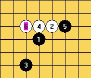

郁闷的名月白六
首页
五子棋交流
#1 郁闷的名月白六 作者：兔子哥哥 发表时间：2009-7-30 15:52:23
问一下这个名月6必胜了吗，正确的7应该走哪里呢？哪位高人给指点一下，谢谢了！
#2 Re:郁闷的名月白六 作者：sonix 发表时间：2009-7-30 16:08:53
 10s.rar
10s.rar［ 失落刀 于 2009-7-30 17:51:48 时奖励此帖[金币加 20 威望加1］
#3 Re:郁闷的名月白六 作者：兔子哥哥 发表时间：2009-7-30 23:06:31
谢谢